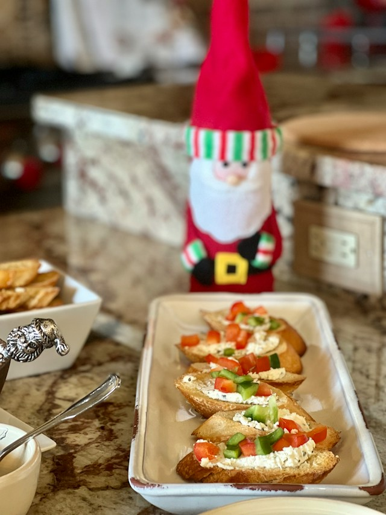

Italian Zucchini Recipe

These Italian sausage stuffed zucchini boats are the summer recipe for the abundant garden.
Ingredients
- 4 medium zucchini
- 1/4 cups finely chopped onion
- 2 clovers garlic
- 1 (24 ounce) jar marinata souce
- 8 ounces shedded italian blend cheese
- 3 tablespoon seasened
- 1/4 teasoon ground cinnamon
- 1/4 teaspoon ground coriander
- 1/4 teaspoon ground nutmed
Directions
- Preheat the oven to 400 degrees
- Heat a lagre deep skillet over medium-high heat
- Fill each prepared zucchini half with sausage mixture
- Add 1/2 cup war to remaining sauce in marinata
- Bake in the preheated oven until heated through, browned and buddly and zucchini in tender about 20 minutes
Back to home page